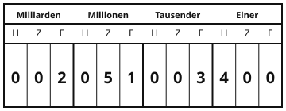

Zahlen bis zu den Milliarden
Mit einem KI-Tutor lernen
Ein KI-Tutor erklärt dir diese Seite und hilft dir bei den Aufgaben. Wähl deinen Assistenten:
Mit Claude öffnen Mit ChatGPT öffnen Mit Mistral Vibe öffnen
Du nutzt dein eigenes Konto beim Anbieter. Der Assistent ist kein Angebot von lernapps.net: lernapps liefert nur Inhalte und Aufgaben. Die Wahl gilt für alle Seiten, nur auf diesem Gerät.
Was du hier lernst
Zeitungen nennen große Zahlen: Einwohner, Entfernungen, Preise. Wenn du wissen willst, wie groß eine Einwohnerzahl ist, musst du sie lesen können. Nach dieser Seite kannst du solche Zahlen lesen, schreiben und in die Stellenwerttafel eintragen. Du baust auf der Seite davor auf: Zehn Plättchen einer Spalte sind ein Plättchen der nächsten.
Aufgabe
Lösung
Richtige Antwort: 1000
Eine Million ist tausendmal so viel wie Tausend: 1000 · 1000. Du bündelst also 1000 Tausender zu 1 Million.
Die Tafel in Dreierblöcken
Damit auch sehr große Zahlen lesbar bleiben, wächst die Tafel nach links. Die Spalten sind in Dreierblöcken geordnet: Einer, Tausender, Millionen und Milliarden. In jedem Block stehen Hunderter, Zehner und Einer. Beim Schreiben lässt du zwischen den Blöcken eine kleine Lücke. Beim Vergleichen gilt: Mehr Stellen heißt größere Zahl.

© CC0-1.0Die Zahl in der Tafel: 2 Milliarden 51 Millionen 3 Tausend 400. Vorn schreibst du keine Nullen: Die Zahl beginnt bei der ersten Ziffer, die nicht 0 ist. Leere Spalten nach der ersten Ziffer bekommen eine 0.
- Milliarde
Eine Milliarde sind tausend Millionen. Sie wird mit 1 000 000 000 geschrieben, also mit neun Nullen.
Beispiel
Eine Zahl mit zehn Stellen lesen
Die Zahl aus dem Schaubild oben ist 2 051 003 400. Lies sie Block für Block von links: „zwei Milliarden, einundfünfzig Millionen, dreitausendvierhundert“. Der Block der Tausender ist 003: nur 3 Tausender. Die beiden Nullen davor halten die Plätze frei.
Übung
Aufgabe
Drei Beispielaufgaben, jede mit ihrer Lösung:
Aufgabe Nr. 1
Schreibe als Zahl: 4 Millionen, 87 Tausender und 4 Einer.
Tipp
Schreibe erst die Blöcke: Millionen, Tausender, Einer. Jeder Block nach den Millionen hat drei Stellen.
Lösung
Richtige Antwort: 4 087 004
Aufgabe Nr. 2
Schreibe als Zahl: 3 Millionen, 69 Tausender und 4 Einer.
Tipp
Schreibe erst die Blöcke: Millionen, Tausender, Einer. Jeder Block nach den Millionen hat drei Stellen.
Lösung
Richtige Antwort: 3 069 004
Aufgabe Nr. 3
Schreibe als Zahl: 8 Millionen, 74 Tausender und 1 Einer.
Tipp
Schreibe erst die Blöcke: Millionen, Tausender, Einer. Jeder Block nach den Millionen hat drei Stellen.
Lösung
Richtige Antwort: 8 074 001
Aufgabe
Lösung
Richtige Antwort: eine Million – 1 000 000; zehn Millionen – 10 000 000; eine Milliarde – 1 000 000 000
Eine Million hat sechs Nullen, eine Milliarde neun. Zehn Millionen hat sieben Nullen.
Aufgabe
Lösung
Richtige Antwort: Die Aussage stimmt nicht.
Von Block zu Block wird der Wert tausendmal so groß: Tausend, Million, Milliarde. Eine Milliarde sind tausend Millionen.
Aufgabe
Lösung
Richtige Antwort: 1. 48 200, 2. 995 000, 3. 1 250 000, 4. 8 200 000
Vergleiche zuerst die Anzahl der Stellen: Mehr Stellen heißt größere Zahl. Bei gleich vielen Stellen vergleichst du von links.
Fehler gefunden oder eine Idee für diese App?